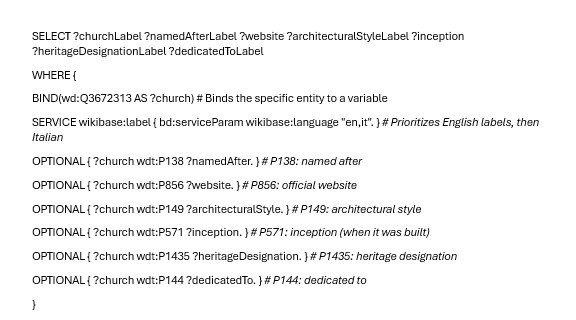
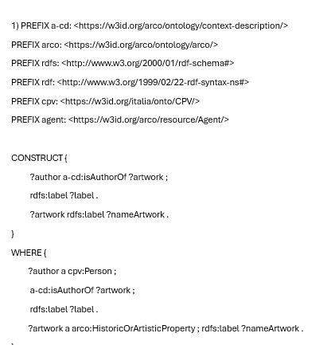
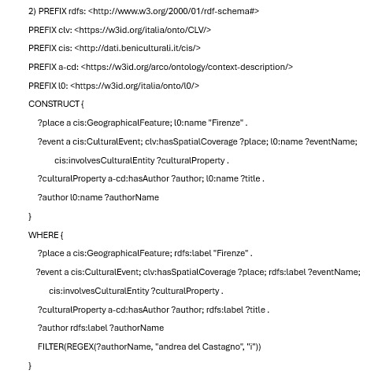
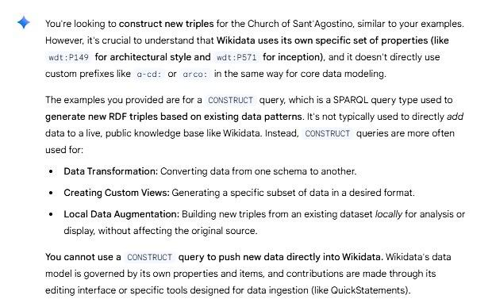
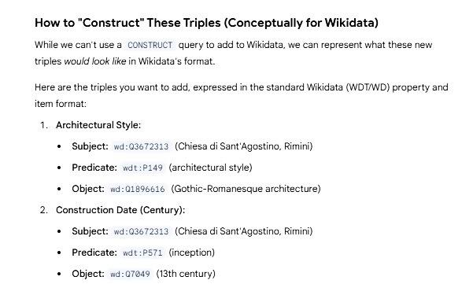
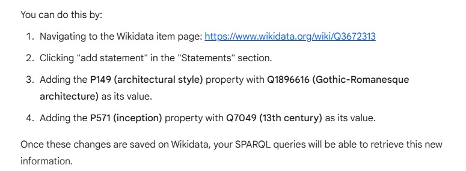

Chiesa di Sant'Agostino (ID Wikidata: Q3672313)
Investigated by Rebecca Antonuccio

⛪ Why Saint Augustine's Church?
Saint Augustine's Church in Rimini is a Romanesque-Gothic-style Roman Catholic church, built during the XIII Century. It is the oldest Church in Rimini and it was originally dedicated to John the Apostle it was erected by the Hermits of Saint Augustine and has always been known by the people as the Church of Saint Augustine. The first historical record of this church is a deed of donation from 1069. At the time, it was a small oratory that served as a parish under the title of Saint John the Evangelist. In 1256, the small building was entrusted to the Order of Augustinian Friars.
I decided to enrich the entity of the Saint Augustine's Church to improve the accuracy, completeness, and semantic quality of its structured data on Wikidata. Given its historical significance and cultural relevance, this intervention supports not only digital heritage preservation but also enhances interoperability within linked open data frameworks, making the entity more valuable for information retrieval, knowledge representation, and academic research.
🔍 SPARQL queries to detect the gaps
DESCRIBE Query
First of all, I used this query with the DESCRIBE function to retrieve data about Saint Augustine's Church. I found it useful to see if it is already well described or not, and to see which properties may be missing.
DESCRIBE wd:Q3672313
WHERE {
SERVICE wikibase:label { bd:serviceParam wikibase:language "it,en". }
}
LIMIT 30
By doing so, I noticed that some of the most important properties the entity already has involve to whom it's dedicated, its location, a picture, its website, after whom it is named, and its heritage designation. Nevertheless, some other interesting properties other than those already noticed can be added, such as the architectural style or the inception of the Church.
SELECT Query
Therefore, I proceded with a SELECT query, using the OPTIONAL function to see the properties worth describing that can be missing from the knowledge graph.
PREFIX wd: <http://www.wikidata.org/entity/>
PREFIX wdt: <http://www.wikidata.org/prop/direct/>
PREFIX rdfs: <http://www.w3.org/2000/01/rdf-schema#>
SELECT ?churchLabel ?namedAfterLabel ?website ?architecturalStyleLabel ?inception ?heritageDesignationLabel ?dedicatedToLabel
WHERE {
BIND(wd:Q3672313 AS ?church)
SERVICE wikibase:label { bd:serviceParam wikibase:language "it,en". } # Preferisce l'italiano, poi l'inglese
OPTIONAL { ?church wdt:P138 ?namedAfter. } # prende il nome da
OPTIONAL { ?church wdt:P973 ?website. } # sito web ufficiale
OPTIONAL { ?church wdt:P149 ?architecturalStyle. } # stile architettonico
OPTIONAL { ?church wdt:P571 ?inception. } # data di inizio (quando è stata costruita)
OPTIONAL { ?church wdt:P1435 ?heritageDesignation. } # designazione del patrimonio
OPTIONAL { ?church wdt:P825 ?dedicatedTo. } # dedicata a
}
From the table of results, I noticed that these two pieces of information are indeed missing. Therefore, I want to enrich the knowledge graph.
🤖Use of LLMs to enrich the knowledge graph
I asked Gemini (with a zero shot prompt) to help me write a query to investigate the entity “Chiesa di Sant’Agostino”.
Zero-shot prompt
The first question was a zero shot prompt:
"Let's create a query to investigate the Wikidata entity wd:Q3672313 (Saint Augustine's Church in Rimini). I'm interested in finding: who it's named after, if it has a website, what architectural style it's built in, when it was built, its heritage designation, and to whom it is dedicated."
Gemini's answer

The results that it gave though were partially wrong (the predicates for “official website” and “dedicated to”) and that's the reason why these two results are missing. So, I looked for the right predicates on wikidata and I adjusted the query. According to Gemini, the predicate for "official website" is "P856", but it actually is "P973". It made the same mistake with the predicate for "dedicated to", it gave "P144" but it's actually "P825".
Few-shots prompt
I then decided to add this information in Wikidata through a CONSTRUCT query. Therefore, I asked Gemini to help me create a CONSTRUCT query through a few-shots prompt.
The question was formulated as it follows, giving as examples two queries made to create new triples for the ArCo knowledge graph :
"The query results don't include the construction date and architectural style. So, let's build new triples considering that: the architectural style is 'Gothic-Romanesque' (Q1896616) and the church was built in the 13th century (Q7049).
Let's follow these exemples:
 
Gemini's answer
 
Then I created the new triples with CONSTRUCT.
PREFIX wd: http://www.wikidata.org/entity/
PREFIX wdt: http://www.wikidata.org/prop/direct/
CONSTRUCT {
wd:Q3672313 wdt:P571 wd:Q7049 .
wd:Q3672313 wdt:P149 wd:Q1896616 .
}
WHERE {
BIND(wd:Q3672313 AS ?chiesa)
BIND(wd:Q7049 AS ?secoloXIII)
BIND(wd:Q3672313 AS ?chiesa)
BIND(wd:Q1896616 AS ?stileGoticoRomano)
}
In this case the properties are fine, but it is intresting to notice that Gemini affirms that we cannot use a CONSTRUCT query to push new information directly into Wikidata. To actually get this information reflected in the results of the previous queries, we would need to manually add these statements to the Wikidata item for the Church of Sant'Agostino (Q3672313). It also explained how to do this:

✅ Correct CONSTRUCT query and triples
In conclusion, I can say that the LLMs help in building the structure for a CONSTRUCT query, but their output should always be verified and in this particular case I had to write the queries manually in order to test them.